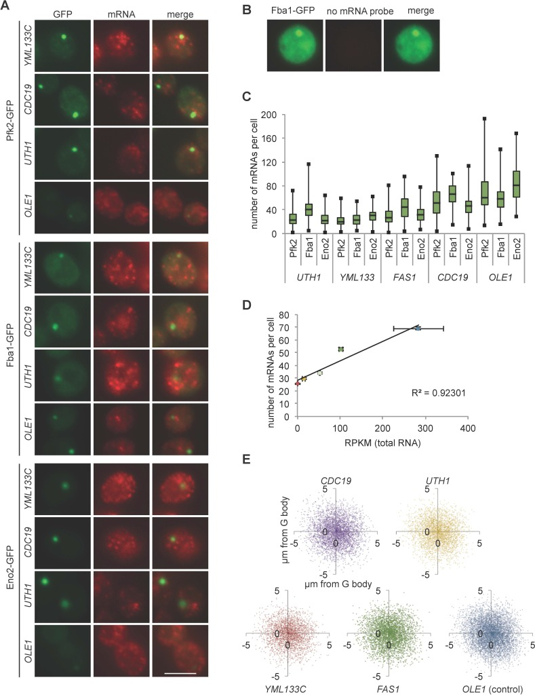

glycolytic body
A membraneless cytoplasmic ribonucleoprotein assembly that concentrates glycolytic enzymes and associated RNAs during hypoxic growth of Saccharomyces cerevisiae. [DOI:10.7554/eLife.48480]

NCBITaxon:4932) · Gregory G Fuller, Ting Han, Mallory A Freeberg, James J Moresco, Amirhossein Ghanbari Niaki, Nathan P Roach, John R Yates, Sua Myong, John K Kim; CC BY, via PubMed Central · CC_BY_4_0 · source: PMC PMC7162659.1 fig3s1 · DOI:10.7554/eLife.48480Synonyms: G body; G-body
Part of: GO:0005737 — cytoplasm (no local record)
Components
| Component | Type | Part of / acts on | Grounding | Genes | Stoichiometry | Essential | Role |
|---|---|---|---|---|---|---|---|
| ATP-dependent 6-phosphofructokinase, eukaryotic-type | Protein | part of | InterPro:IPR009161 | PFK1, PFK2 | UNKNOWN | Pfk1 and Pfk2 concentrate in hypoxic G bodies; Pfk2 contributes to recruitment and daughter-cell assembly, but its deletion does not eliminate mother-cell G bodies.
| |
| Fructose-bisphosphate aldolase, class II, yeast/E. coli subtype | Protein | part of | InterPro:IPR006411 | FBA1 | UNKNOWN | Glycolytic enzyme concentrated with phosphofructokinase in the assembly.
| |
| Enolase | Protein | part of | InterPro:IPR000941 | ENO2 | UNKNOWN | Glycolytic enzyme used as an independent G-body reporter.
| |
| Pyruvate kinase | Protein | part of | InterPro:IPR001697 | CDC19 | UNKNOWN | Glycolytic enzyme concentrated in hypoxic G bodies; not conflated with heat-induced Cdc19 aggregates.
| |
| Heat shock protein 70 family | Protein | part of | InterPro:IPR013126 | SSA1, SSA2, SSE2 | UNKNOWN | Resident chaperone-family members; class membership does not establish a shared assembly requirement.
| |
| Small heat shock protein | Protein | part of | InterPro:IPR031107 | HSP26, HSP42 | UNKNOWN | Small heat shock proteins directly associated with hypoxic G bodies.
| |
| Alpha,alpha-trehalose-phosphate synthase | Protein | part of | InterPro:IPR012766 | TPS1 | UNKNOWN | Variable metabolic constituent represented by Tps1, not the whole trehalose-synthase complex.
| |
| Acetyl-CoA carboxylase | Protein | part of | InterPro:IPR049076 | ACC1 | UNKNOWN | Variable metabolic constituent observed in a subset of hypoxic cells.
| |
| Fatty acid synthase alpha subunit, yeast | Protein | part of | InterPro:IPR026025 | FAS2 | UNKNOWN | Variable constituent represented by the fatty acid synthase alpha subunit, not an assertion that the entire synthase complex is resident.
| |
| RNA | Rna | part of | SO:0000356 | UNKNOWN | Associated RNA supports G-body assembly and integrity. No single obligatory transcript species, universal RNA stoichiometry or complete RNA-depletion state is established.
|
Organism-specific protein examples
Named proteins in which each component's role was established, with the organism the evidence comes from. The component above is the taxon-agnostic family; these are the specific entries behind it.
ATP-dependent 6-phosphofructokinase, eukaryotic-type
| Accession | Protein | Gene | Organism | Entry |
|---|---|---|---|---|
UniProtKB:P16861 | ATP-dependent 6-phosphofructokinase subunit alpha | PFK1 | Saccharomyces cerevisiae S288C (NCBITaxon:559292) | REVIEWED |
Role and evidence (2 references)S288C reference-sequence exemplar for the protein studied in BY4741/BY4742-derived yeast; the accession does not assert that the exact reference stock was imaged.
| ||||
UniProtKB:P16862 | ATP-dependent 6-phosphofructokinase subunit beta | PFK2 | Saccharomyces cerevisiae S288C (NCBITaxon:559292) | REVIEWED |
Role and evidence (2 references)S288C reference-sequence exemplar for the protein studied in BY4741/BY4742-derived yeast; the accession does not assert that the exact reference stock was imaged.
| ||||
Fructose-bisphosphate aldolase, class II, yeast/E. coli subtype
| Accession | Protein | Gene | Organism | Entry |
|---|---|---|---|---|
UniProtKB:P14540 | Fructose-bisphosphate aldolase | FBA1 | Saccharomyces cerevisiae S288C (NCBITaxon:559292) | REVIEWED |
Role and evidence (2 references)S288C reference-sequence exemplar for the protein studied in BY4741/BY4742-derived yeast; the accession does not assert that the exact reference stock was imaged.
| ||||
Enolase
| Accession | Protein | Gene | Organism | Entry |
|---|---|---|---|---|
UniProtKB:P00925 | Enolase 2 | ENO2 | Saccharomyces cerevisiae S288C (NCBITaxon:559292) | REVIEWED |
Role and evidence (3 references)S288C reference-sequence exemplar for the protein studied in BY4741/BY4742-derived yeast; the accession does not assert that the exact reference stock was imaged.
| ||||
Pyruvate kinase
| Accession | Protein | Gene | Organism | Entry |
|---|---|---|---|---|
UniProtKB:P00549 | Pyruvate kinase 1 | CDC19 | Saccharomyces cerevisiae S288C (NCBITaxon:559292) | REVIEWED |
Role and evidence (2 references)S288C reference-sequence exemplar for the protein studied in BY4741/BY4742-derived yeast; the accession does not assert that the exact reference stock was imaged.
| ||||
Heat shock protein 70 family
| Accession | Protein | Gene | Organism | Entry |
|---|---|---|---|---|
UniProtKB:P10591 | Heat shock protein SSA1 | SSA1 | Saccharomyces cerevisiae S288C (NCBITaxon:559292) | REVIEWED |
Role and evidence (2 references)S288C reference-sequence exemplar for the protein studied in BY4741/BY4742-derived yeast; the accession does not assert that the exact reference stock was imaged.
| ||||
UniProtKB:P10592 | Heat shock protein SSA2 | SSA2 | Saccharomyces cerevisiae S288C (NCBITaxon:559292) | REVIEWED |
Role and evidence (2 references)S288C reference-sequence exemplar for the protein studied in BY4741/BY4742-derived yeast; the accession does not assert that the exact reference stock was imaged.
| ||||
UniProtKB:P32590 | Heat shock protein homolog SSE2 | SSE2 | Saccharomyces cerevisiae S288C (NCBITaxon:559292) | REVIEWED |
Role and evidence (2 references)S288C reference-sequence exemplar for the protein studied in BY4741/BY4742-derived yeast; the accession does not assert that the exact reference stock was imaged.
| ||||
Small heat shock protein
| Accession | Protein | Gene | Organism | Entry |
|---|---|---|---|---|
UniProtKB:P15992 | Heat shock protein 26 | HSP26 | Saccharomyces cerevisiae S288C (NCBITaxon:559292) | REVIEWED |
Role and evidence (2 references)S288C reference-sequence exemplar for the protein studied in BY4741/BY4742-derived yeast; the accession does not assert that the exact reference stock was imaged.
| ||||
UniProtKB:Q12329 | Heat shock protein 42 | HSP42 | Saccharomyces cerevisiae S288C (NCBITaxon:559292) | REVIEWED |
Role and evidence (2 references)S288C reference-sequence exemplar for the protein studied in BY4741/BY4742-derived yeast; the accession does not assert that the exact reference stock was imaged.
| ||||
Alpha,alpha-trehalose-phosphate synthase
| Accession | Protein | Gene | Organism | Entry |
|---|---|---|---|---|
UniProtKB:Q00764 | Alpha,alpha-trehalose-phosphate synthase [UDP-forming] 56 kDa subunit | TPS1 | Saccharomyces cerevisiae S288C (NCBITaxon:559292) | REVIEWED |
Role and evidence (2 references)S288C reference-sequence exemplar for the protein studied in BY4741/BY4742-derived yeast; the accession does not assert that the exact reference stock was imaged.
| ||||
Acetyl-CoA carboxylase
| Accession | Protein | Gene | Organism | Entry |
|---|---|---|---|---|
UniProtKB:Q00955 | Acetyl-CoA carboxylase | ACC1 | Saccharomyces cerevisiae S288C (NCBITaxon:559292) | REVIEWED |
Role and evidence (2 references)S288C reference-sequence exemplar for the protein studied in BY4741/BY4742-derived yeast; the accession does not assert that the exact reference stock was imaged.
| ||||
Fatty acid synthase alpha subunit, yeast
| Accession | Protein | Gene | Organism | Entry |
|---|---|---|---|---|
UniProtKB:P19097 | Fatty acid synthase subunit alpha | FAS2 | Saccharomyces cerevisiae S288C (NCBITaxon:559292) | REVIEWED |
Role and evidence (2 references)S288C reference-sequence exemplar for the protein studied in BY4741/BY4742-derived yeast; the accession does not assert that the exact reference stock was imaged.
| ||||
Canonical examples
NCBITaxon:4932Saccharomyces cerevisiae — Hypoxic yeast G bodies studied using Pfk2-, Fba1- and Eno2-tagged strains, with BY4742 as the untagged immunoprecipitation control. AnaeroPack cultures used YPD or synthetic medium with 5% glucose. This species example does not assert universal occurrence. [DOI:10.7554/eLife.48480]NCBITaxon:559292Saccharomyces cerevisiae S288C — Reference lineage for the BY4741-background experiments and reviewed protein exemplars; not a claim that the unmodified S288C stock was imaged. The study also observed Pfk2 puncta in HAP1-wild-type W303, ruling out restriction to the S288C hap1 allele. [DOI:10.1016/j.celrep.2017.06.082]
Functions
- Spatial organization of glycolytic enzymes — Concentrates several glycolytic enzymes in a non-membrane-bound cytoplasmic compartment during glucose-supported hypoxic growth.
DOI:10.1016/j.celrep.2017.06.082Direct dual-color enzyme colocalization, immunogold TEM and biochemical enrichment support spatial organization. Hypoxia-preconditioned cells with G bodies consume glucose faster than normoxia-preconditioned controls, but preconditioning and Snf1 perturbation have effects beyond the structure.
- Contribution to competitive growth under hypoxia — G-body-capable cells have a competitive growth advantage over cells expressing a G-body-targeted active RNase in the tested hypoxic cultures.
DOI:10.7554/eLife.48480Growth competition after normoxic preculture includes untargeted MqsR and Pfk2-D348S fusion controls. Targeted RNA degradation may affect local RNAs beyond morphology; this does not prove a single exclusive metabolic mechanism or universal survival requirement.
Physical properties
- DIAMETER: 200-500
UO:0000018(Approximate diameter of electron-dense, non-membrane-bound Pfk2-GFP-labeled bodies in hypoxic S. cerevisiae, measured by immunogold TEM in the 2017 study. Not an invariant size or the Gaussian radius inferred from later fluorescence images.)DOI:10.1016/j.celrep.2017.06.082Hypoxia triggers glycolytic body formation Results describe the approximate TEM diameter and cite Figures 1D and S2C.
Mechanism graphs
RNA-dependent G-body formation during hypoxic growth (ASSEMBLY)
| Subject | Predicate | Object | Evidence |
|---|---|---|---|
| Hypoxia with available glucose | promotes | G-body formation |
|
| RNA | supports | G-body formation |
|
| Induction of Pfk2-fused active RNase | inhibits | G-body formation |
|
Targeted RNase fractures preformed G bodies (DISASSEMBLY)
| Subject | Predicate | Object | Evidence |
|---|---|---|---|
| Induction of G-body-targeted active RNase | promotes | Fragmentation into multiple foci |
|
| Preformed glycolytic body | undergoes | Fragmentation into multiple foci |
|
Discussions
- INTERPRETATION (RESOLVED): Which broader or related structures must not be merged with the glycolytic body? A local identifier is retained because complete cached OAK label/alias searches and current QuickGO glycolytic searches did not yield an exact cellular-component term. GO:0036464 is a broader class, not identity.
- INTERPRETATION (RESOLVED): Does the META-body terminology or engineered recruitment establish an exact synonym or native constituent? Terminology and engineered localization must not inflate the native structural scope.
- INTERPRETATION (RESOLVED): Should adjacent proteins, genetic regulators and all proteomics hits be listed as constituents? The 2017 workflow distinguishes 156 candidate hits from microscopy-supported localization.
- KNOWLEDGE_GAP (OPEN): Which additional low-frequency or earlier-study candidates are bona fide G-body residents? The inspected Results report more candidates than the conservative high-confidence inventory curated here. Pgi1, Tdh3, Gpm1 and Eno1 form hypoxic puncta with residual cytoplasmic signal, but their dual-label validation and the full supplemental/2013 candidate sets have not been independently audited.
- INTERPRETATION (RESOLVED): Do gel-like observations prove a universal liquid-liquid phase-separation mechanism? The 2020 study reports slow fusion, limited fluorescence recovery and incomplete sensitivity to 1,6-hexanediol.
- KNOWLEDGE_GAP (OPEN): How does G-body organization change metabolic output independently of pleiotropic perturbations? Hypoxic preconditioning, Snf1 loss and targeted RNA degradation constrain but do not uniquely isolate the causal contribution of compartmentalization. The 2020 Discussion leaves substrate channeling, altered enzyme kinetics and local translation unresolved.
Datasets
- Glycolytic body (G body) RIP-sequencing (
GSE145881) · NCBI_GEO · TRANSCRIPTOMICS
Organism: Saccharomyces cerevisiae · 6 samplesMetadata-only reference verified from the native GEO SOFT archive on 2026-10-05, matching PMID 32298230 and the paper's Data availability section. No raw reads or processed matrices were reanalyzed. Distinct from normoxic PAR-CLIP evidence.
https://ftp.ncbi.nlm.nih.gov/geo/series/GSE145nnn/GSE145881/soft/GSE145881_family.soft.gz
Evidence
DOI:10.1016/j.celrep.2017.06.082Jin et al. 2017; PMID 28746874, PMC5586494.1. Read the defining localization, proteomic-validation, Snf1, metabolism, viability and culture Results/Methods from native JATS. PMC metadata reports not retracted. TDM licensing does not authorize hosting its figures.DOI:10.7554/eLife.48480Fuller et al. 2020; PMID 32298230, PMC7162659.1. Read RNA enrichment/localization, targeted-RNase, multivalency, gel-behavior and competition Results plus relevant Methods and Discussion. Native metadata is not retracted and JATS specifies CC BY 4.0. Figure 3 supplement 1 was visually inspected.DOI:10.1371/journal.pone.0283002Utsumi et al. 2023. Read the publisher's Introduction and Results/Discussion on engineered peptide recruitment. META body is broader terminology; engineered Adh1 recruitment is not native Adh1 membership evidence.
Curation history
2026-10-05T13:36:52Zcodex · CREATED_RECORD — Scaffolded by scripts/new_record.py2026-10-05T13:40:25Zcodex · EXPANDED_RECORD — Added ten component classes, thirteen verified protein exemplars, scoped yeast examples, five mechanistic edges, TEM diameter, licensed microscopy, native GEO metadata and explicit localization/interpretation boundaries.2026-10-05T13:41:28Zcodex · CORRECTED_CITATION_SCOPE — Separated the 2017 Eno2 localization note from the 2020 RNA-localization and RNase evidence at both component and protein-example level.
Source: data/structures/ribonucleoprotein/glycolytic_body.yaml